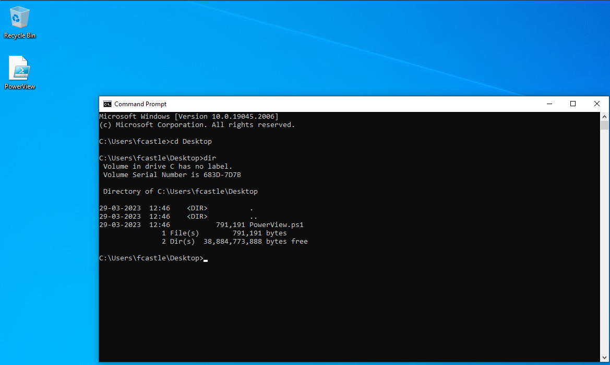

PowerView as been deprecated and Plumhound as been introduced in that case which is the sister of bloodhound.
https://github.com/PlumHound/PlumHound
Go on Google and search Powerview Github
https://github.com/PowerShellMafia/PowerSploit/blob/master/Recon/PowerView.ps1
Take this file and bring it to one of the windows 10 machine. As we are going to run PowerView which is a Powershell type Script and we are going to run it and do
enumeration with it.
In an Attacker situation say we have access to a shell then we are going to use that shell and load powershell.
Difference b/w running the script on the machine and on the shell
Will have the option of autocomplete which we will not be having in the shell
